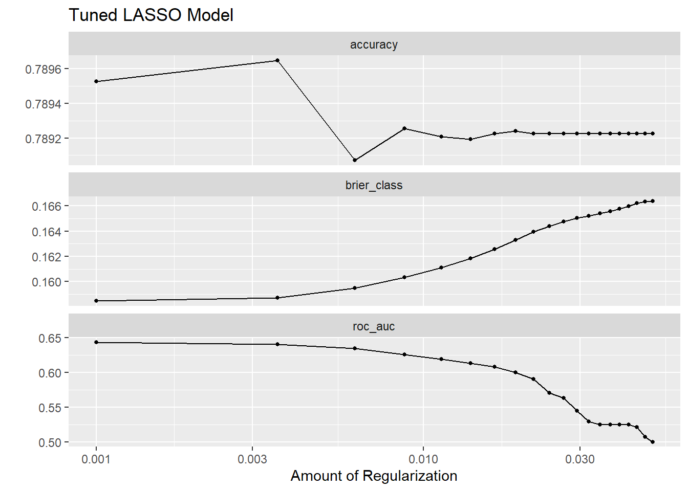

library(tidymodels) # use tidymodels framework
library(ggplot2) # producing visual displays of data
library(dplyr) # manipulating and cleaning data
library(here) # making relative pathways
library(glmnet) # for LASSO regression engine
library(doParallel) # for parallel processing
library(rsample) # for cross validation
library(yardstick) # for metrics
library(mlbench)Data Analysis and Modelling of Teen Vaccination Surveys
LASSO using Tidymodels
We will start by opening the libraries that we will need for creating a LASSO regression model for the data
Now, we will load the preprocessed data.
# Load and preprocess data
data_location <- here::here("data","processed-data","cleandata1.rds")
mydata <- readRDS(data_location)
# Remove rows with missing values
mydata$SEX <- droplevels(mydata$SEX, exclude = c("DON'T KNOW", "MISSING IN ERROR", "REFUSED"))
mydata$INS_STAT2_I <- droplevels(mydata$INS_STAT2_I, exclude = "MISSING Data")
mydata$STATE <- droplevels(mydata$STATE, exclude = "Missing Data")
mydata$MOBIL_1 <- droplevels(mydata$MOBIL_1, exclude = c("DON'T KNOW", "MISSING IN ERROR", "REFUSED"))
mydata$FACILTY <- droplevels(mydata$FACILITY, exclude = "Missing Data")
mydata$P_UTDHPV <- droplevels(mydata$P_UTDHPV, exclude = "Missing Data")Next, we will split the data into training and testing groups so that the LASSO regression has a comparison group.
# Split data into training and testing datasets
set.seed(123) # seed for reproducibility
split_data <- initial_split(mydata, prop = 0.8) # 80% split for training/testing data
train_data <- training(split_data)
test_data <- testing(split_data)Next, we will specify the LASSO recipe, or the regression formula. This will contain the predictors of interest used for previous analysis and P_UTDHPV as the outcome.
# Create recipe containing predictors of interest
lasso_rec <- recipe( P_UTDHPV ~ AGE + SEX + STATE + INS_STAT2_I + INCQ298A + INS_BREAK_I + INCPOV1 + RACEETHK + EDUC1 + LANGUAGE + MOBIL_1 + RENT_OWN + FACILITY, data = train_data) %>%
step_dummy(all_nominal(), -all_outcomes()) %>% # convert categorical variables (nominal) into dummy variables
step_rm(all_outcomes(), -all_outcomes()) #remove the outcome variables from the dataset
# Prepare the recipe
lasso_prep <- lasso_rec %>%
prep()Now I will implement the function. This involves setting the specific LASSO regression engine, creating a workflow, and then extracting the fit of the model.
# Specify logistic regression model
lasso_spec <- logistic_reg(penalty = 0.05, mixture = 1) %>%
set_engine("glmnet")
# Create workflow
lasso_wf <- workflow() %>%
add_recipe(lasso_rec)
# Fit the model using training data
lasso_fit <- lasso_wf %>%
add_model(lasso_spec) %>%
fit(data = train_data)
# Extract and tidy model parameters
lasso_fit %>%
extract_fit_parsnip() %>%
tidy()# A tibble: 96 × 3
term estimate penalty
<chr> <dbl> <dbl>
1 (Intercept) 1.32 0.05
2 AGE 0 0.05
3 SEX_FEMALE 0 0.05
4 STATE_DELAWARE 0 0.05
5 STATE_DISTRICT.OF.COLUMBIA 0 0.05
6 STATE_FLORIDA 0 0.05
7 STATE_GEORGIA 0 0.05
8 STATE_HAWAII 0 0.05
9 STATE_IDAHO 0 0.05
10 STATE_ILLINOIS 0 0.05
# ℹ 86 more rows# Extract and tidy model parameters
lasso_coef <- lasso_fit %>%
extract_fit_parsnip() %>%
tidy()
# Filter out predictors with non-zero coefficients
lasso_nonzero_coef <- lasso_coef %>%
filter(estimate != 0)
# View the remaining predictors with non-zero coefficients
num_observations <- nrow(lasso_nonzero_coef)
print(num_observations)[1] 1It seems like the LASSO model is penalizing the coefficients too heavily, resulting in most of them being shrunk to zero. We are going to try lowering the penalty parameter (penalty) to see if it is effective in solving our problem.
# Specify logistic regression model
lasso_spec <- logistic_reg(penalty = 0.005, mixture = 1) %>%
set_engine("glmnet")
# Create workflow
lasso_wf <- workflow() %>%
add_recipe(lasso_rec)
# Fit the model using training data
lasso_fit <- lasso_wf %>%
add_model(lasso_spec) %>%
fit(data = train_data)
# Extract and tidy model parameters
lasso_fit %>%
extract_fit_parsnip() %>%
tidy()# A tibble: 96 × 3
term estimate penalty
<chr> <dbl> <dbl>
1 (Intercept) 0.0179 0.005
2 AGE 0.0750 0.005
3 SEX_FEMALE 0.119 0.005
4 STATE_DELAWARE 0.0680 0.005
5 STATE_DISTRICT.OF.COLUMBIA 0.0589 0.005
6 STATE_FLORIDA -0.134 0.005
7 STATE_GEORGIA -0.224 0.005
8 STATE_HAWAII 0.268 0.005
9 STATE_IDAHO 0 0.005
10 STATE_ILLINOIS 0.000216 0.005
# ℹ 86 more rows# Extract and tidy model parameters
lasso_coef <- lasso_fit %>%
extract_fit_parsnip() %>%
tidy()
# Filter out predictors with non-zero coefficients
lasso_nonzero_coef <- lasso_coef %>%
filter(estimate != 0)
# View the remaining predictors with non-zero coefficients
num_observations <- nrow(lasso_nonzero_coef)
print(num_observations)[1] 54# Generate predictions
predictions <- lasso_fit %>%
predict(new_data = mydata) %>%
bind_cols(mydata)
# Calculate ROC AUC
predictions %>%
mutate(predicted_numeric = as.numeric(.pred_class)) %>%
roc_auc(P_UTDHPV, predicted_numeric)# A tibble: 1 × 3
.metric .estimator .estimate
<chr> <chr> <dbl>
1 roc_auc binary 0.493# Generate predictions
predictions2 <- lasso_fit %>%
predict(new_data = train_data) %>%
bind_cols(train_data)
# Calculate ROC AUC
predictions2 %>%
mutate(predicted_numeric = as.numeric(.pred_class)) %>%
roc_auc(P_UTDHPV, predicted_numeric)# A tibble: 1 × 3
.metric .estimator .estimate
<chr> <chr> <dbl>
1 roc_auc binary 0.492When attempting to determine how lowering the penalty effected the ability of the model, we produced some predictions with both the original data set and training data, both performed fairly poorly, with a ROC_AUC score close to 0.5, suggesting the the model created predictions that were comparable to random.
To determine the ideal penalty, we are going to tune the model.
Tuning LASSO model
Any penalty above 0.05 resulted in all of the predictor coefficient reduced to zero. When performing the following tuning, I set the penalty grid from 0.001 to 0.05.
# Define a grid of penalty values to tune over
penalty_grid <- expand.grid(penalty = seq(0.001, 0.05, length.out = 20))
# Set up parallel processing for faster tuning
registerDoParallel()
# LASSO model specification
lasso_model_tuned <-
logistic_reg(penalty = tune(), mixture = 1) %>%
set_engine("glmnet") %>%
set_mode("classification") # Ensure correct mode for classification problem
# LASSO Workflow
lasso_workflow_tuned <-
workflow() %>%
add_model(lasso_model_tuned) %>%
add_recipe(lasso_rec)
# Set up the grid for tuning
lasso_tuned <-
lasso_workflow_tuned %>%
tune_grid(
resamples = vfold_cv(train_data, v = 5, repeats = 5),
grid = penalty_grid,
control = control_grid(verbose = TRUE)
)
# View tuning results
tuned_plot <- autoplot(lasso_tuned)
tuned_plot + ggtitle( "Tuned LASSO Model")
# Collect tuning results
tuning_results <- lasso_tuned %>%
collect_metrics()
# Filter for ROC AUC metric
roc_auc <- tuning_results %>%
filter(.metric == "roc_auc")
# View the ROC AUC values
print(roc_auc)# A tibble: 20 × 7
penalty .metric .estimator mean n std_err .config
<dbl> <chr> <chr> <dbl> <int> <dbl> <chr>
1 0.001 roc_auc binary 0.644 25 0.00226 Preprocessor1_Model01
2 0.00358 roc_auc binary 0.641 25 0.00211 Preprocessor1_Model02
3 0.00616 roc_auc binary 0.635 25 0.00174 Preprocessor1_Model03
4 0.00874 roc_auc binary 0.626 25 0.00169 Preprocessor1_Model04
5 0.0113 roc_auc binary 0.619 25 0.00167 Preprocessor1_Model05
6 0.0139 roc_auc binary 0.613 25 0.00170 Preprocessor1_Model06
7 0.0165 roc_auc binary 0.608 25 0.00182 Preprocessor1_Model07
8 0.0191 roc_auc binary 0.600 25 0.00194 Preprocessor1_Model08
9 0.0216 roc_auc binary 0.591 25 0.00218 Preprocessor1_Model09
10 0.0242 roc_auc binary 0.571 25 0.00299 Preprocessor1_Model10
11 0.0268 roc_auc binary 0.563 25 0.00197 Preprocessor1_Model11
12 0.0294 roc_auc binary 0.545 25 0.00296 Preprocessor1_Model12
13 0.0319 roc_auc binary 0.530 25 0.00149 Preprocessor1_Model13
14 0.0345 roc_auc binary 0.526 25 0.000764 Preprocessor1_Model14
15 0.0371 roc_auc binary 0.525 25 0.000811 Preprocessor1_Model15
16 0.0397 roc_auc binary 0.525 25 0.000811 Preprocessor1_Model16
17 0.0423 roc_auc binary 0.525 25 0.000811 Preprocessor1_Model17
18 0.0448 roc_auc binary 0.521 25 0.00175 Preprocessor1_Model18
19 0.0474 roc_auc binary 0.508 25 0.00216 Preprocessor1_Model19
20 0.05 roc_auc binary 0.501 25 0.000541 Preprocessor1_Model20When viewing the metrics of the tuning, we can see that the regularization is directly correlated with the reduction in roc_auc and accuracy and the increase in brier_Class. The accuracy is later shown to start increasing suggesting underfitting starts occurring around 0.01. Just reviewing the roc_auc alone, the best performance occurs when the penalty is at its lowest.